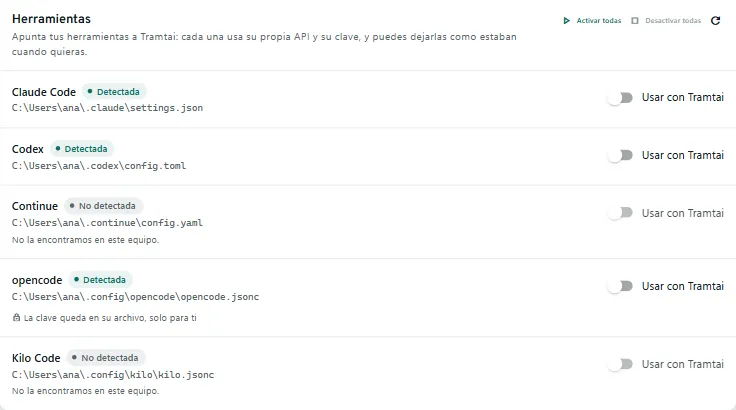
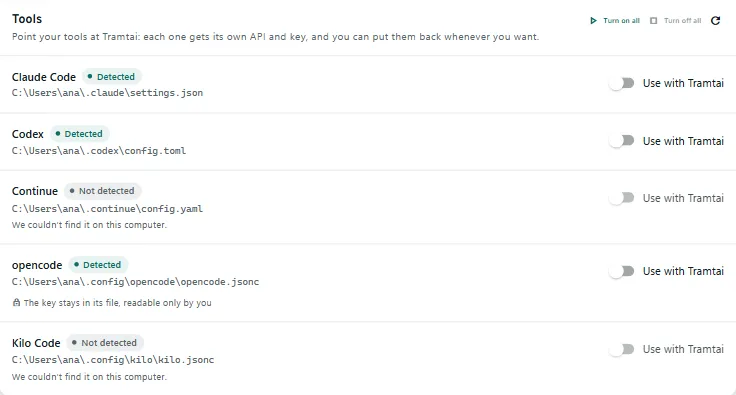
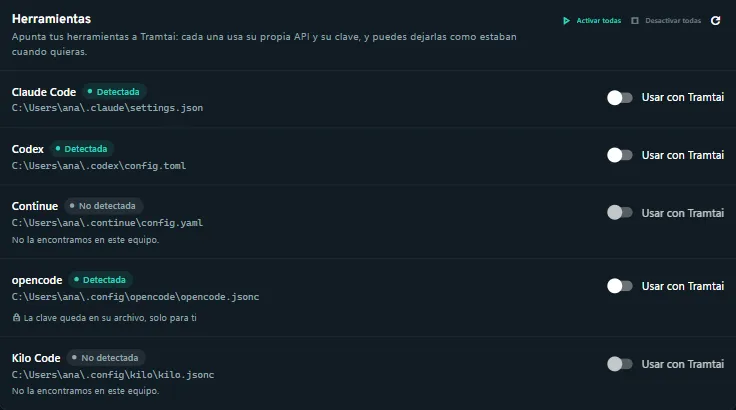
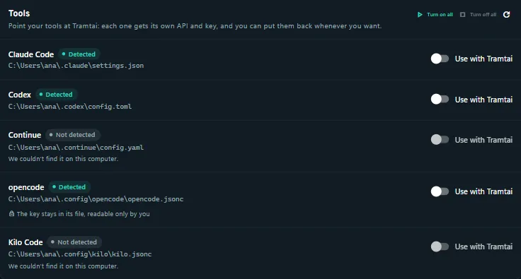

Conectar tus herramientasConnect your tools
Apunta Claude Code, Codex, Continue, opencode y Kilo a Tramtai desde Mis APIs, y déjalas como estaban cuando quieras.Point Claude Code, Codex, Continue, opencode and Kilo at Tramtai from My APIs, and put them back as they were whenever you want.
De un vistazoAt a glance
| Archivo que tocaFile it changes | Dónde queda la claveWhere the key goes | |
|---|---|---|
| Claude CodeClaude Code | settings.json de ~/.claude (o de CLAUDE_CONFIG_DIR); en un proyecto, .claude/settings.local.json, nunca settings.jsonsettings.json in ~/.claude (or in CLAUDE_CONFIG_DIR); in a project, .claude/settings.local.json, never settings.json | En el almacén cifrado del sistema: Claude Code la pide con «tramtai herramientas clave claude-code»In the encrypted system store: Claude Code asks for it with “tramtai herramientas clave claude-code” |
| CodexCodex | config.toml de ~/.codex (o de CODEX_HOME): model, model_provider y un proveedor tramtai, en bloques con marcas de Tramtaiconfig.toml in ~/.codex (or in CODEX_HOME): model, model_provider and a tramtai provider, in blocks with Tramtai markers | En el almacén cifrado del sistema: Codex la pide con «tramtai herramientas clave codex»In the encrypted system store: Codex asks for it with “tramtai herramientas clave codex” |
| ContinueContinue | config.yaml de ~/.continue: un modelo llamado Tramtaiconfig.yaml in ~/.continue: a model named Tramtai | En su archivo, con permisos solo para tiIn its file, readable only by you |
| opencodeopencode | opencode.json (o opencode.jsonc) de ~/.config/opencode: un proveedor llamado tramtaiopencode.json (or opencode.jsonc) in ~/.config/opencode: a provider named tramtai | En su archivo, con permisos solo para tiIn its file, readable only by you |
| Kilo CodeKilo Code | kilo.jsonc de ~/.config/kilo: un proveedor llamado tramtaikilo.jsonc in ~/.config/kilo: a provider named tramtai | En su archivo, con permisos solo para tiIn its file, readable only by you |
Cada herramienta usa su propia API (grupo «Herramientas», su id de nombre), limitada al modelo elegido y con una clave que solo vale allí. Por ejemplo, /p/claude-code/anthropic o /p/codex/openai/v1.Each tool uses its own API (“Herramientas” group, its id as name), limited to the chosen model, with a key that only works there. For example, /p/claude-code/anthropic or /p/codex/openai/v1.
Paso a pasoStep by step
- En Mis APIs abre la pestaña «Herramientas»: una fila por herramienta, con su estado, su modelo y el archivo que toca.In My APIs open the “Tools” tab: one row per tool, with its state, its model and the file it changes.
- Activa una con su interruptor y elige el agente y el modelo. «Activar todas» lo hace con todas las detectadas, con un solo modelo.Turn one on with its switch and pick the agent and model. “Turn on all” does it for every detected tool, with a single model.
- Tramtai crea su API, guarda una copia del archivo y escribe solo lo suyo. Si la herramienta estaba abierta, ábrela de nuevo.Tramtai creates its API, saves a copy of the file and writes only its own part. If the tool was open, open it again.
- Para dejarla como estaba, apaga el interruptor: Tramtai quita lo suyo y respeta lo que cambiaste después.To put it back as it was, turn the switch off: Tramtai removes its part and keeps what you changed afterwards.




| Qué significaWhat it means | |
|---|---|
| No detectadaNot detected | No hay rastro de ella en este equipo: ni su programa ni su carpeta de configuración.There is no trace of it on this computer: neither its program nor its configuration folder. |
| DetectadaDetected | Está instalada y todavía no apunta a Tramtai.It is installed and does not point at Tramtai yet. |
| ActivaActive | Su archivo apunta a Tramtai y conserva lo que escribió Tramtai.Its file points at Tramtai and still has what Tramtai wrote. |
| DesactivadaTurned off | Estuvo activa: su archivo está como estaba y su API sigue en Mis APIs, detenida.It was on: its file is as it was and its API is still in My APIs, stopped. |
| DesactualizadaOut of date | Estuvo activa pero ya no funciona. La fila dice por qué y «Volver a activar» lo arregla.It was on but no longer works. The row says why, and “Turn on again” fixes it. |
| Solo globalGlobal only | Desde el espacio de un proyecto solo Claude Code tiene archivo propio: las demás se activan desde el espacio global.From a project workspace only Claude Code has its own file: turn the others on from the global workspace. |
«Desactualizada» pasa si se borró o detuvo su API, cambió el puerto, Tramtai se movió o actualizó (la orden de la clave ya no existe), falta la clave, se editó a mano o activas el HTTPS propio.It is “Out of date” if its API was deleted or stopped, the port changed, Tramtai moved or updated (key command gone), its key is missing, it was edited by hand or you turn on Tramtai’s own HTTPS.
Dejarlas como estabanPut them back as they were
- Con el interruptor «Usar con Tramtai» (o «Desactivar todas») se quita solo lo que puso Tramtai y vuelven los valores de antes; lo que cambiaste se queda. La API se detiene y la clave se guarda.The “Use with Tramtai” switch (or “Turn off all”) removes only what Tramtai added and brings back the earlier values; what you changed stays. The API stops and the key is kept.
- «Olvidar» desactiva y además borra la clave y lo que Tramtai anotó. Su API queda detenida en Mis APIs, por si quieres borrarla.“Forget” turns it off and also deletes the key and what Tramtai noted. Its API stays stopped in My APIs, in case you want to delete it.
- «Restaurar la copia» repone el archivo entero, con la fecha de la copia. Es el último recurso: pierdes lo que cambiaste desde entonces, y pide confirmación.“Restore the copy” puts back the whole file, as of the copy’s date. It is the last resort: you lose what you changed since then, and it asks you to confirm.
Antes de cambiar nada, Tramtai copia el archivo entero en herramientas/copias, dentro de su carpeta de datos, con permisos solo para ti. Guarda las 3 últimas de cada herramienta.Before changing anything, Tramtai copies the whole file into herramientas/copias, inside its data folder, readable only by you. It keeps the last 3 copies of each tool.
«Restaurar la copia» usa la de esta activación; las otras, 2 como mucho, quedan en esa carpeta para recuperarlas a mano. Si el archivo no existía antes, no hay copia y no se ofrece restaurar.“Restore the copy” uses the one from this activation; the others, at most 2, stay in that folder to recover by hand. If the file did not exist before, there is no copy and Restore is not offered.
Si sincronizas ~/.claude, ~/.codex o tus dotfiles, esa configuración llega a equipos sin Tramtai y la herramienta no conectaría: desactívala antes o deja el archivo fuera.If you sync ~/.claude, ~/.codex or your dotfiles, that configuration reaches computers without Tramtai and the tool could not connect: turn it off first or leave the file out.
Si tu empresa gestiona Claude Code con ajustes de organización, mandan sobre los tuyos: la fila lo avisa, pero Tramtai no puede cambiarlos.If your company manages Claude Code with organization settings, they override yours: the row warns you, but Tramtai cannot change them.
PreguntasQuestions
¿Por qué la clave de Continue, opencode y Kilo va en su archivo?Why do the keys of Continue, opencode and Kilo go in their file?
Porque no saben pedirla con una orden, como Claude Code y Codex. Tramtai la escribe en su archivo, con permisos solo para ti; es la de su API, que no vale en ningún otro sitio.Because they cannot ask for it with a command, as Claude Code and Codex can. Tramtai writes it in their file, readable only by you; it is the key of their own API, which works nowhere else.
¿Por qué no puedo activar una herramienta?Why can’t I turn a tool on?
La fila lo dice. No se ofrecen en el modo servidor ni con el HTTPS propio de Tramtai, y el agente debe valer para apps. Si está activa en otro espacio, desactívala allí antes.The row says why. Tools are not offered in server mode or with Tramtai’s own HTTPS, and the agent must be allowed for apps. If it is on in another workspace, turn it off there first.
¿Puedo activar una herramienta solo en un proyecto?Can I turn a tool on for just one project?
Solo Claude Code, desde el espacio del proyecto: escribe en .claude/settings.local.json y nunca en settings.json, que se comparte por git. Las demás, desde el espacio global.Only Claude Code, from the project workspace: it writes to .claude/settings.local.json and never to settings.json, which is shared through git. The others, from the global workspace.
¿Por qué Tramtai me pide pasar Continue a config.yaml?Why does Tramtai ask me to move Continue to config.yaml?
Continue lee config.yaml si existe y, si no, config.json. Con solo config.json, crear el YAML dejaría tu JSON sin uso: pásalo a config.yaml y vuelve a activarla.Continue reads config.yaml if it exists and config.json if not. With only config.json, creating the YAML would leave your JSON unused: move it to config.yaml and turn the tool on again.
¿Qué hago si dice que ya hay un proveedor «tramtai» en config.toml?What if it says config.toml already has a “tramtai” provider?
Esa tabla no la escribió Tramtai, o quedó una antigua tras editar el archivo a mano. Renómbrala o bórrala. Un model o model_provider en varias líneas tampoco vale: déjalo en una.Tramtai did not write that table, or an old one was left after editing the file by hand. Rename or delete it. A model or model_provider on several lines does not work either: put it on one line.
¿Y si cambio el modelo de Codex con /model?What if I change Codex’s model with /model?
Esa línea pasa a ser tuya: al desactivar, Tramtai no la devuelve a como estaba. Si quieres otro modelo, cámbialo en config.toml.That line becomes yours: when you turn the tool off, Tramtai does not put it back as it was. If you want another model, change it in config.toml.
¿Y si edito a mano el archivo de una herramienta?What if I edit a tool’s file by hand?
Desactivar solo quita lo que sigue como Tramtai lo escribió y deja lo demás. Si cambias lo suyo, la fila pasa a «Desactualizada». Un archivo ilegible no se toca: la fila dice qué hacer.Turning off removes only what is still as Tramtai wrote it and leaves the rest. If you change its part, the row becomes “Out of date”. An unreadable file is not touched: the row says what to do.
¿Y si ya tengo una API con el nombre de la herramienta?What if I already have an API with the tool’s name?
Tramtai no la toca y no activa la herramienta: cámbiale el nombre en Mis APIs y vuelve a activarla.Tramtai does not touch it and does not turn the tool on: rename it in My APIs and turn the tool on again.
¿Para qué sirve «tramtai herramientas clave»?What is “tramtai herramientas clave” for?
La usan Claude Code y Codex para pedir su clave. Responde mientras Tramtai la guarda (activa o desactivada, no tras «Olvidar») y escribe solo la clave; desactivada, su API detenida no la acepta.Claude Code and Codex use it to ask for their key. It responds while Tramtai keeps the key (on or turned off, not after “Forget”) and prints only the key; turned off, its stopped API rejects it.
¿Qué órdenes tiene la CLI?Which commands does the CLI have?
tramtai herramientas (o tools): listar (list), activar (enable), desactivar (disable), olvidar (forget), restaurar (restore) y clave (key).tramtai herramientas (or tools): listar (list), activar (enable), desactivar (disable), olvidar (forget), restaurar (restore) and clave (key).
¿Cómo activo o desactivo varias a la vez?How do I turn several on or off at once?
Con varios ids o con --todas (--all), por ejemplo «tramtai herramientas activar --todas». activar acepta --modelo (--model) con agente/modelo, como claude/sonnet.Pass several ids or --todas (--all), for example “tramtai herramientas activar --todas”. activar takes --modelo (--model) with agent/model, such as claude/sonnet.
En la terminal: Mis APIs (4), ← → a Herramientas. Espacio activa o desactiva; Enter reactiva una desactualizada; t activa todas y T las desactiva; m cambia el modelo; R restaura; o olvida; r refresca.In the terminal: My APIs (4), ← → to Tools. Space turns on or off; Enter turns on again an out-of-date tool; t turns on all and T turns them off; m changes model; R restores; o forgets; r refreshes.